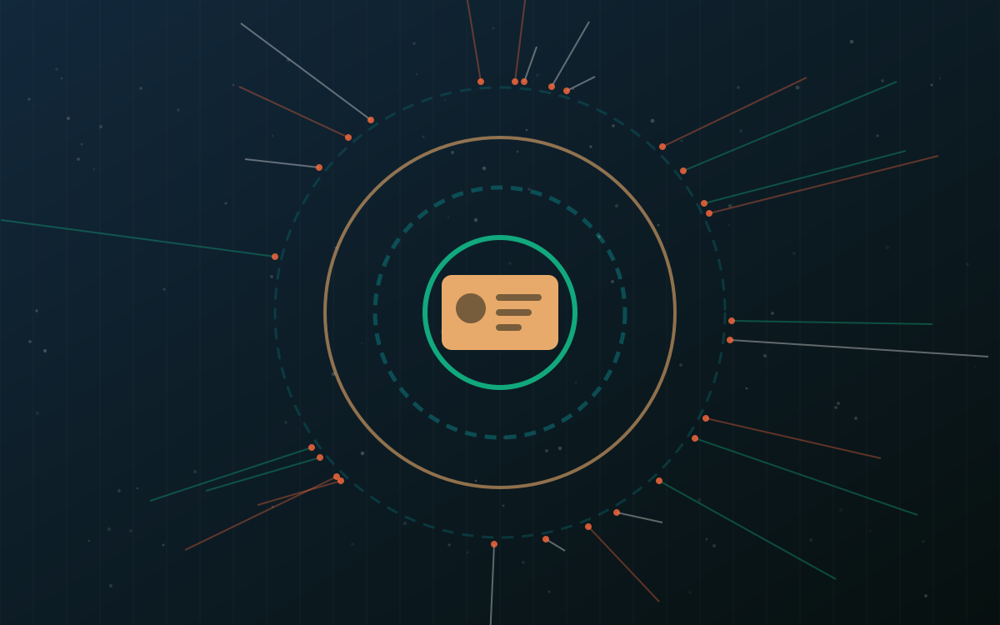

The Signal · Issue 10 · AI in Finance
Singapore wants banks to know your AI agent. America's banks are telling customers the agent is their problem
MAS will help develop a 'know your agent' protocol covering who an agent is, what authority and mandate it has and how reliable it is, and its managing director advised against giving agents bank logins. The same week Citi, PNC and Citizens told customers they answer for what third-party agents do, and four UK regulators told agent makers to come to them before launch.

Facts are attributed and linked to their sources. The analysis and opinions are the author's own.
What it is
At the Singapore FinTech Festival on 19 November, MAS managing director Chia Der Jiun said that in the next phase of its Safeguards for Agentic Finance at Runtime work, MAS will facilitate a "know your agent" protocol for exchanging information between customer agents and financial institutions. It covers four things: who the agent is and whom it represents, what authority it has been given, what mandate it operates under, and what assurance exists about its provenance and reliability. With that information, he said, a bank can decide the terms and scope it will allow an agent, and set up a dedicated secure channel for it. He was blunt about the alternative: "Some users are giving agents their login credentials to financial accounts. I would not advise giving personal agents such access, as there is insufficient assurance of safety." MAS will also set up an Agentic Money Sandbox with the Future of Finance Institute, starting with corporate treasury and payments.
In the United States the answer this week came through contracts. Citi updated its Online User Agreement so that customers who give third-party AI agents access to their accounts "are responsible for activities conducted through those agents", a spokesperson told TechCrunch. TechCrunch reports that the terms go further: if the AI tool leaks the customer's credentials or is hacked, the customer is responsible for what the hackers do. PNC changed its terms on 18 November and Citizens emailed customers with a similar warning; JPMorgan and Bank of America announced similar policies last month. Citi's terms note that agents Citi provides itself carry no additional liability.
In the UK, the heads of the CMA, FCA, ICO and Ofcom wrote to ministers on 16 November that they know of "the forthcoming launch of a number of personal agentic products". They expect firms to engage with regulators before launch, and said engagement "has not been consistently early or open". Their message for banks and telecoms firms considering deals with agent providers: "Their own obligations continue to apply when customers use personal AI agents."
Two pilots this week showed what the alternative to a shared password looks like. On 17 November BNY and Microsoft said their agents negotiated a pilot US Treasury bill trade through BNY's Agentic Negotiation Protocol, which verifies participants, keeps agents within approved pricing limits, checks that both sides submitted matching terms and keeps a record of messages, checks and human decisions. The agents could not execute; human traders approved the trade. On 18 November Hyundai Card and Kinexys by J.P. Morgan described a test, with no live money, in which a Hyundai Card agent requested FX under a digitally signed, machine-readable mandate, and a Kinexys agent checked its identity and authority against that mandate before executing, escalating or refusing.
Why it matters
These are two answers to the question Chia asked: if an agent acts incorrectly or beyond its instructions, who bears responsibility? America's biggest banks are answering it by contract. If you hand over your password, the loss is yours. MAS is trying to answer it by design. If the bank knows which agent it is dealing with and what that agent may do, it can set terms for each agent instead of refusing them all.
A clause that says the agent is the customer's problem settles who pays. It does not tell the bank which agent it is talking to.
In my view the contract route works only while agent users are few. A customer who loses money through an agent will still call the bank, and a regulator will still ask what the bank knew. The DRCF letter says as much for the UK. For a bank, the four questions are a ready-made intake form, and the two pilots show the parts that make answers checkable: a verified identity, a signed mandate, limits enforced by something other than the agent, a human approval where the stakes are high, and a record both sides can reconstruct. Three practical steps follow. Find out whether agents are already logging in with customers' passwords. Write the terms for agents you would accept, not only for those you block. And give mandate changes the same dual control as a change to a signatory list. I turned the four questions into a one-page mandate card the morning after the speech; it is free until 29 November.
Issue 08 covered the first round of this split, between OpenAI's wallet and JPMorgan's refusal. The difference this week is that a central bank has said what it wants to know about each agent.
What I'd watch
- When MAS publishes a draft of the know-your-agent protocol, and which banks join the Agentic Money Sandbox.
- Whether other US banks follow Citi in putting losses from a hacked AI tool on the customer.
- Which personal agent products launch in the UK, and whether any of them needs FCA authorisation.
Sources
- Advancing the Future of Finance: From Foundation to Scale, keynote by Chia Der Jiun MAS, 19 Nov 2026.
- More banks say customers using AI agents are on their own — even if they get hacked TechCrunch, 18 Nov 2026.
- DRCF Joint Letter on Personal AI Agents CMA, FCA, ICO and Ofcom, 16 Nov 2026.
- BNY and Microsoft Complete First Agentic Negotiation of a U.S. Treasury Trade BNY, 17 Nov 2026.
- Hyundai Card and Kinexys by J.P. Morgan advance trust framework for safe AI-agent transactions J.P. Morgan, 18 Nov 2026.